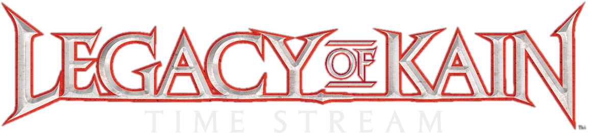

- Before Nosgoth's Recorded History
- The Wheel of Fate
- The Land of Nosgoth – ruled by the two elder races, similar in power, but different in method and intention: the Vampires, and the Hylden.
- The Vampires worship the Wheel of Fate, the cleansing agony of birth, death, and rebirth, the purifying rhythm of the universe – the cycle which sustains all life, to which all souls are irresistibly drawn, manipulated by the parasitic Elder God.
- The Vampire-Hylden War
- The Hylden oppose the Vampires’ tyrannous God, and refuse to submit to the Wheel of Fate. For this, the Vampires oppress their Hylden adversaries.
- The races battle for dominance of Nosgoth in a great, apocalyptic war, which flames for a thousand years, and will destroy both victor and vanquished alike.
- The Genesis of the Pillars of Nosgoth
- In triumph, the Vampires banish the Hylden from the world with powerful magic, sealing them into another plane of existence, and raise the Pillars of Nosgoth as the lock that binds them.
- The nine Pillars reach high into the skies, and deep into the earth (representing Mind, Dimension, Conflict, Nature, Energy, Time, States, Death, and – at the center of all of them binding them together – Balance), intrinsically and supernaturally tied to the spiritual and physical "health" of the Land.
- The Summoning of the Guardians
- With the appointment of the original Vampire Guardians, the Circle of Nine – a body of sorcerers entrusted with the safekeeping of the Pillars – is formed.
- When a member dies, the supernatural force behind the Pillars culls a worthy successor, who is destined from birth to fulfill that role.
- Each Guardian is aligned to the principle of the Pillar he serves, and the Balance Guardian is the axis of them all.
- The Blood Curse
- In their defeat, the Hylden retaliate as they fall – afflicting the Vampires not only with a predatory blood-thirst, but with sterility as well
- With the Vampires’ transformation comes their enemies’ true revenge: immortality. Expelled from the cycle of death and rebirth, the apostates are cast from the Wheel of Fate.
- Plunged into despair, and unable to bear the separation from their God, many Vampires are driven to madness and self-annihilation.
- The Forging of the Reaver
- The human Vorador is born
- The mystical sword known as the Soul Reaver is forged. Later to have more
- The Dark Gift is Passed
- Vorador is turned; he becomes a vampire
- Millennia pass – at least 2,000 years
- Nosgoth's early history
- Over 500 years before Blood Omen: Legacy of Kain
- Nosgoth's vampire population increases
- The formation of the Sarafan (a monastic order of warrior-priests, charged with the eradication of the vampires) by the Circle and the crusade to counter the "vampire menace." Malek commands the armies.
- The human Raziel is born, and becomes a Sarafan warrior-priest
- The Vampire Purges. Thousands of vampires killed
- The Slaughter of the Circle
- The death of Janos Audron. He is murdered, his heart torn "throbbing and bleeding" from his body.
- Vorador takes his revenge upon the Circle for their sponsorship of the Sarafan crusade. He infiltrates their stronghold and murders six of the sorcerers, before humiliating the Sarafan general Malek (the Pillar of Conflict) in combat.
- The death of the Sarafan commanders. Raziel of the Sarafan dies in combat, and is entombed with the Sarafan martyrs
- The necromancer Mortanius (one of the surviving Circle members, and the Pillar of Death) punishes Malek for his failure to protect the Circle, by fusing his soul into a magical suit of armor.
- The Pillars cull new successors
- Vorador retreats from the world of human affairs, ensconcing himself in his remote mansion.
- The Sarafan crusade ceases
- History preceeding Blood Omen: Legacy of Kain
- first timetravelKain travels nearly 50 years into Nosgoth's past
- Kain assassinates the young King William the Just, who will become the Nemesis
- Kain discovers another Time Streaming Device and returns to Nosgoth's present
- Events of Legacy of Kain: Soul Reaver 2
- third timetravelRaziel arrives to Nosgoth's past and meets Moebius at the Sarafan fortress, now occupied by a Vampire Hunter citizen army that seeks to avenge the Death of William the Just
- The Corruption of the Pillars
- Mortanius, the Guardian of Death, is possessed by a dark entity
- Ariel, the Guardian of Balance, is murdered; the human Kain is born, destined to take her place
- Ariel's murder triggers a chain of events, resulting in the corruption of the Circle, and the decay of the Pillars
- 30 years pass
- The Nobleman Kain departs from his home city of Coorhagen on a journey across Nosgoth.
- Kain is assassinated
- Events of Blood Omen: Legacy of Kain
- In the underworld, the Necromancer Mortanius offers Kain the chance to avenge his murder. Kain accepts the offer, and is reborn as a Vampire
- Kain finds his assassins and kills them, getting his revenge - but Mortanius drives him on to the Pillars, saying that the brigands were only the instruments of his murder, not the cause.
- Kain hunts down and destroys the corrupt Circle Guardians, restoring each of the Pillars in turn
- Kain meets the ancient vampire Vorador
- Kain discovers the Soul Reaver within Avernus Cathedral, and claims it for his own
- Kain joins forces with King Ottmar's Army of Hope, to confront the Legions of the tyrant Nemesis
- The Armies of Hope are decimated; Kain activates the Time Streaming Device, and is propelled nearly 50 years back in time
- second timetravelKain returns to present-day Nosgoth... and discovers that assassinating William 50 years ago triggered a renewed vampire purge
- Vorador is executed; Kain is the only surviving vampire in Nosgoth
- Kain confronts and kills Moebius, the Guardian of Time
- Kain confronts Mortanius, the final Guardian, at the Pillars
- Mortanius is destroyed as the Dark Entity possessing his body emerges; Kain defeats the Dark Entity in combat
- With Mortanius' death, all but the Balance Pillar are restored
- Kain realizes finally that he is the Balance Guardian, and therefore the last of the Nine
He must choose between sacrificing himself to heal the world... or preserving his life and ruling Nosgoth in its damnation
- Kain refuses the sacrifice, ensuring the Pillars' collapse
- 400 years after Blood Omen: Legacy of Kain
- Events of Legacy of Kain: Blood Omen 2
- Roughly a century later
- The Raising of the Lieutenants
- Kain, appreciating the irony of his decision, sets the ruined Pillars as the seat of his fledgling empire, with the unrestored Balance Pillar as the base of his throne.
- Kain establishes his empire by recruiting six lieutenants
- Raziel is raised first, and thus receives the greatest portion of Kain's gift. The six lieutenants have been too long dead to remember much of their human lives; they are ignorant of their Sarafan roots, or of Kain's blasphemous private joke.
- The Holy War
- Kain's empire grows. The six lieutenants recruit clans of their own, "turning" the corpses of their human victims to do their bidding.
- The six legions of vampires pillage Nosgoth, destroying its major human Kingdoms. Within a hundred years, humanity has been thoroughly domesticated. There remain some feral humans scattered across the Hinterlands, clinging to their holy war to rid Nosgoth of the vampire scourge.
- The Vampire Clans dominate and subjugate the major human Kingdoms of Nosgoth - In little more than a century, humanity is thoroughly domesticated.
- Some defeated human factions retreat to Nosgoth’s mountains and the Hinterlands beyond the Great Southern Sea.
- Events of Legacy of Kain: Spirit Noir ;)
- Over the centuries, each of the vampires undergoes a series of evolutionary adaptations. These evolutionary "growth spurts" are preceded by a near-hibernatory period of retreat, from which the vampire emerges transformed.
- A millennium passes
- Raziel emerges from one of these evolutionary hibernations having grown wings.
- History preceeding Legacy of Kain: Soul Reaver
- Raziel presents himself and his new gift before Kain and the other Leutenants at the Sanctuary of the Clans, for this transgression, Raziel is executed by being cast into the Abyss
- The Fall of Kain’s Empire
- Shortly after Raziel is executed, Kain disappears, leaving Nosgoth’s throne empty.
- Leaderless, the vampire Legions of Nosgoth start fighting each other for control over the Empire.
- In the midst of this fight the Clans turn on the Razielim, taking Kain’s example they start persecuting and killing them.
- The Razielim evolve wings as Raziel did before them. The surviving members of the clan take refuge hiding in the Dark Eden. (needs confirmation)
- The Dark Eden’s corrupting energy accelerates the devolution process of the Razielim. (needs confirmation)
- The Human Uprising
- With the Vampire Legions endlessly fighting in a civil war, the remaining human factions of Nosgoth rebuild what was left of their civilization, organising a new army.
- The reorganised human factions seize the opportunity and attack the Empire, making one last stand for the humankind against the vampires, the War for Nosgoth has Begun.
- The Vampires loose several areas to the Human armies, realising they will need air support to take back the lost territories - the remaining Razielim are recruited for this task by force.
- Events of Nosgoth
- Dumah Gets Staked (placeholder title!)
- Turel Goes Missing (placeholder title!)
- Centuries later
- Events of Legacy of Kain: Soul Reaver
- Raziel is revived by the mysterious Elder God at the bottom of the Abyss and is reborn as a reaver of souls
- Raziel returns to reap the vampires' apostate souls and take his revenge on his vampire brethren and his creator, Kain
- Raziel confronts Kain within the ruins of the Pillars Sanctuary; Kain attacks Raziel with the Soul Reaver, his ancient sword – the blade is destroyed on impact. Now a wraith blade, the Soul Reaver intertwines with Raziel and becomes his symbiotic weapon.
- Raziel pursues Kain through Moebius's ancient Chronoplast time portal, and is plunged into Nosgoth's past...